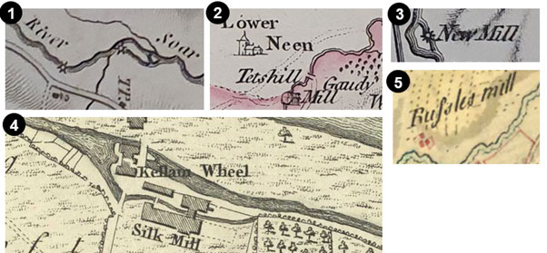
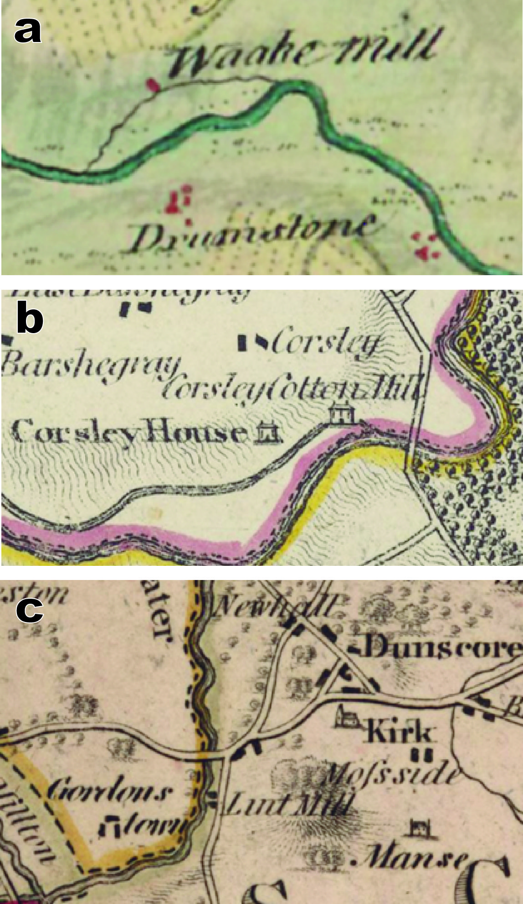
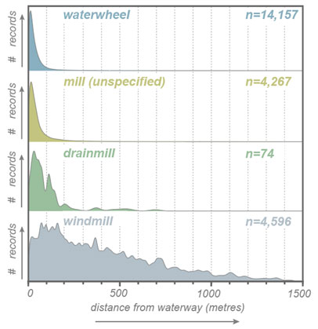

Project
Accuracy and Georeferencing
Gaps and Bias
Large-scale county maps are incredible historical resources and arguably offer the most comprehensive source of spatial information on milling at the regional to national-level in Britain outside of documentary evidence for insurance companies and related to parliamentary inquiries acts in the mid-nineteenth century. Yet, like most historical resources, early maps are the cumulative product of their age and medium: with notable differences depending on the time and length of survey, the scale, style and quality of engraving, the quality of preservation and curation, and later scrutiny by researchers.
While maps certainly offer clues concerning the distribution and type of mills throughout the union at various intervals of time, we recognize that notable gaps and biases in the private county map surveys certainly exist. The choices leading to the simplification of a real landscape into a legible map can speak volumes about those involved. For example, the individual behaviour of the original contemporary surveyors to include particular features while others did not, or the later choices by engravers to append (or not) missing information for reissues of county maps, present intriguing lines of inquiry concerning the lives and decisions of people in the past tied to these collections.

Figure 7. (a) and (b) Two copies of a map of Berwickshire published by Capt. Andrew Armstrong, his son Mostyn Armstrong, and engraved by A. Bell in 1771. An eagle-eyed viewer might spot some differences in each engraved map however! There are missing hills and a missing windmill (which did exist)! (c) Compare this with John Blackadder’s map published in 1797 from the same region which did include a windmill between Gunsgreen and Netherbyres but not the windmill on the hill south of Netherbyres. Is this the same mill or a different mill? Also note the change in function of the mill south of Linthill from a sawmill to a paper mill. Sources: (a) Armstrong, A. and Armstrong, M., 1771, Map of the county of Berwick: London, s.n., 1 map on 4 sheets. Shelfmark: EMS.s.316. View map. (b) Armstrong, A. and Armstrong, M., 1771, Map of the county of Berwick: London, s.n., 1 map. Shelfmark: Newman.528. View map. (c) Blackadder, J., 1797, Berwickshire, from actual survey: Edinburgh, 1 map. Shelfmark: Newman.1041. View map
Number and Distribution of Historic Mills
This resource should be used as a foundation for further work. Early county maps are only one type of resource to study mill numbers and distributions. We recommend that mill numbers from cartographic maps offer a robust but reliable minimum at the same order of magnitude of in-situ mills that may be captured through other documentary and field evidence. Very few mills are listed as derelict, ‘ruined’, ‘burnt’ and ‘disused’ such that it is possible surveyors often made little distinction between active or abandoned mills at time of survey.
Georeferencing and Spatial Accuracy
You may find that the locations of many mills may not coincide exactly with locations of mills shown on later Ordnance Survey maps in the viewer. This could be due to several reasons we suggest below.
Distortion:
Given the relative accuracy of the instrumentation that informed early county and the Roy Military map surveys , sometimes the information held within early maps sheets are distorted to reality. This is unfortunately why we have chosen not to include the Roy Highland and Lowlands map sheets you can see in the Roy Viewer, or digitised and georeferenced county map sheets held by the NLS as background options in our Mills of Britain viewer. However, due to the spatial relationship between many mills and long-lived features, such as the bends of rivers, crests of hills, or intersections of toll roads, the relative positions of many mills can be ascertained even from map sheets that do not necessarily accord with reality.
Destruction and Rebuilding:
Mill buildings lived a hazardous existence and were prone to damage by fire and flood. While any one mill site could be occupied for decades to centuries, the lifespan of a mill building was typically much shorter. Rebuilding and even expansion of mills could also be expected to shift the location, if only slightly.
River avulsion, canalisation and channelisation:
The river channel upon which watermills were sited could have naturally migrated or moved through time. While river channel migration can be a very slow process, some rivers may have avulsed, or changed channel more rapidly, during a watermill’s lifespan. This is far less likely to affect the position of mills compared to the artificial canalisation and river channelisation by people. Straightening or rerouting of rivers to improve navigation was a common practice across Britain, especially over the last 300 years before major roads and rail were constructed and improved. If mills were rebuilt following changes in network layouts, some mill records may document this.
Manual Error:
Besides distortion, much of the location error is likely due to manual error. We suggest that mill locations are generally within about 500 metres of their noted location by cartographers. This primarily accounts for the distortion of early maps and our own manual geolocation at a regional- to national level. Importantly, however, this assumes of course that the original surveyors and engravers making the map recorded the mill location accurately—which was not always the case! Often, to make a map more legible and/or pleasing to the eye, a cartographer had to portray features that did not necessarily accord with real-world proportions or location. "The prime role of any map is to convert the messiness and infinite variety of an actual landscape into an artificially simplified model"
It is possible that we may need help ‘nudging’ some mill locations in the future—so please stay tuned!
Styles of Watermill Representation
Graphic representation
Mills were most often represented by icon, sometimes with or without accompanying text clarifying the name, type or function of each mill. Of the more than 20,000 mill records in our database from county maps, over 80% of records are associated with icons. The icon of choice in this period to represent a watermill was a generalised waterwheel symbol, a circle with radiating spokes or vanes. Although watermills were the most common feature indicated with a waterwheel symbol, , this symbol was also used to identify other locations with heavy use of waterpower, such as at forges and hydraulic engines.

Figure 8. Examples of watermill representation using the waterwheel asterisk symbol, naming the mill and (in the later OS maps) the inclusion of elaborate or simple buildings, sometimes with or without lades. Sources: (1) King, 1806, A map of a tract of country surrounding Belvoir Castle; including extensive districts of the counties of Leicester, Lincoln & Nottingham; and the whole of the county of Rutland...from a survey taken in the Years 1804, 5, &6: London, Faden. Held by the British Library (undigitised); (2) Jefferys,T., 1775, The County of Bedford Surveyed Anno MDCCLXV: London, Jefferys. Held by the British Library (undigitised); (3) Walker, 1834-1835, Derbyshire; (4) Jefferys, T., 1771, The County of York, survey'd in MDCCLXVII, VIII, IX and MDCCLXX: London, Jefferys & Faden. Held by McMaster Digital Archive; (5) Highlands map sheets for Fifeshire, Roy Military Survey of Scotland. View Russles Mill on Roy map.
Even in the absence of a clear waterwheel icon, watermills were commonly depicted with their supporting water infrastructure. Either using a simple inked line or even a detailed watercourse, weirs and mill lades were depicted conveying water to a mill and returning water back to the river by a tail race. Commonly, mill lades were shown connected to mill ponds that helped mitigate the natural irregularity of river waterpower.

Figure 9. While many watermills are depicted with waterwheel symbols and lades, not all are shown as waterwheels or with lades. Lades providing water for the Mill of Balburney, Mill of Ardatt and Mill of Kinnaird in Forfarshire are variably depicted in the Roy Military Survey (a), by Burdett in Derbyshire (b), and Stobie in Perth and Clackmannan in 1783 (c). Sources: (a) Roy Military Survey of Scotland. View map (b) Burdett, P., 1767 (revised 1791), To the ... members of the society for the encouragement of arts, &c. this survey of Derbyshire, begun in the year 1762 and finished in ... 1767: London, Cary. 1 map on 6 sheets. Shelfmark: EME.s.29. View map (c) Stobie, J., 1783, The counties of Perth and Clackmannan: Edinburgh, Kirkwood & Sons. 1 map on 4 sheets. Shelfmark: EMS.b.2.30. View map.

Figure 10. Small to large dams were depicted by surveyors, from the (a) Roy Military Survey and to b) county maps surveyed in the first quarter of the 19th century. Sources: (a) Peppermill Dam (Paper mill Dam) on the Roy Map. View map. (b) Bryant, A., 1831, Map of the county palantine of Chester from an actual survey made in the years 1829, 1830 & 1831: London, Bryant. 1 map on 4 sheets. Shelfmark: EME.b.2.1. View map.
Text representation
Records with accompanying or standalone text make up ca. 36% of all records in the database. In most cases, this was simply the name of the mill or affirmation that the icon depicted a ‘mill’ site. In a small proportion of records (6%), text was descriptive enough to identify the mill type and, more rarely, the mill function e.g., whether it was a corn (grain) mill, silk mill or fulling mill.

Figure 11. A waake (waulk or fulling) mill in Roy’s map of Aberdeenshire, (b) Crosslee (Corley) Cotton Mill in Ainslie’s 1800 map of Renfrewshire, and (c) a lint (flax) mill south of Dunscore in Crawdord’s 1804 map of Dumfrieshire. The first two are indicated with a mill lade and race. Sources: (a) Roy Military Survey of Scotland. View map. (b) Ainslie, J., 1800, Map of the county of Renfrew…: London, 1 map. Shelfmark: Newman.645. View map. (c) Crawford, W., 1804, Map of Dumfries-shire: Edinburgh, Crawford, 1 map on 4 sheets. Shelfmark: EMS.s.327. View map.
Position relative to rivers
Watermills are fundamentally dependent on waterways. They extract, and then return, a portion of moving water directly from a stream or a mill pond to drive machinery conducting mechanical work. In most cases, this requires either a location on or within a practical distance of a river to assure regular access to water and to reduce the overall cost and maintenance of infrastructure needed to supply water to the mill. Because of this fundamental relationship, the proximity of watermills to rivers has been suggested to range no more than 500 metres horizontal distance from the river for watermills, and often much closer (<275 metres).
The physical geographical relationship between watermills and waterways helps to further identify additional possible watermill sites from records in our database without descriptive text and/or ambiguous symbology. In the case of some cartographers, mills were recorded simply as ‘mill’ by text, sometimes with an inked-in building or open circle.

Figure 12. Various mill sites here display the common building icon used often by early map-makers in both rural and more urban settings. The proximity of ambiguously labelled mill icons to rivers might suggest they relied on waterpower as a motive power, at least at some point in the site’s history. (d) Abundant, independent evidence documents that significant waterpower was used by Jedediah Strutt in his cotton mills established at Belper at the time of its first revision (ca. 1791) of Burdett’s map of Derbyshire. The generic building icons used for the mills at Belper do not indicate this, even though classic waterwheel icons are used elsewhere on the same map to indicate watermill sites. This may highlight the evolving view held by some contemporary individuals about early water-powered cotton mills as entirely different entities to ordinary watermills. Sir Richard Arkwright’s mills at Cromford are similarly depicted to Belper. Map References: Ross' 1777 map of Dumbarton; Ainslie's 1775 map of Fife); Thomson's 1827 map of Fife; and Burdett's revised 1791 map of Derbyshire.
Nearly one-fifth of all ‘mill’ text records in the early county map database are ambiguously annotated with regards to the motive power employed. To identify those which may have been assisted by waterpower, we used their horizontal position relative to the river network to classify possible watermill locations in QGIS.
If all records are compared to their distance from waterways, it appears that most ambiguously labelled ‘mills’ were more likely to be watermills than not if based on their position relative to rivers.

Figure 13. The frequency of records (vertical axis) for each major mill type with their distance from rivers (horizontal axis). See how the records marked with a waterwheel closely plot together, with many records clustered less than 100 metres from a waterway. In contrast, see how windmills can be both close and very far (> 500 metres) from a waterway.
At a first glance, this would make sense as windmills were common landmarks used by surveyors for navigation and triangulation because they were easily recognisable from a distance. Yet our data also highlight that any mill type could be closely located near a stream. However, windmills were often located farther away (>150 metres), and most watermills clearly represented by a waterwheel symbol were located less than 150 metres from a watercourse. Such an observation suggests that many unspecified mill records are likely watermills.
This further prompts questions around the use of the word ‘mill’ versus ‘watermill’ by particular surveyors. Was the contemporary meaning of the word 'mill' during the eighteenth and very early nineteenth century synonymous with 'watermill'? Even if a surveyor did not indicate each type of mill individually by symbol, as some clearly did, watermills would have been easily recognisable by their external infrastructure (mill ponds, lades and races), even from a moderate distance and/or if a waterwheel was also not visible. Mills powered by animal or human muscle appeared from the outside much like other buildings, if tending to be round or octagonal in plan-view. The exceedingly few records of 'horsemill' or 'horse gin' in the database are likely not representative of their total scarcity (see The problem of drainage and threshing mills), but instead supports the idea that animal-powered mills were either passively overlooked by surveyors or were not important enough to indicate on maps commissioned for their private subscribers.
Styles of Windmill Representation
Graphic representation
Windmills were similarly represented by text and symbol, and rarely were differences to form or function consciously differentiated by map-makers. An exception to this is documented by William Yates and his map of Lancaster (1786) where two different symbols for windmills were used: one resembling a tower mill and one an open trestle post mill. By far and large, however, most symbols resembled post mills or simple buildings with wind sails. Depiction of windmills in the Roy’s ‘Great Map’ and early county maps appear very similar in form and variety to those documented in the Old Series.
 for each major mill type with their distance from rivers (horizontal axis)")
Figure 14. Windmills were more often marked by text in Roy's 'Great Map', like the (a) Lathones Windmill and (b) unnamed windmill in Fife. Occasionally, both text and symbol were used, such as at an (c) unnamed windmill in Haddingtonshire and at the (d) Mill of Dumbairney in Perthshire. County maps display a wide array of windmill symbols but it does not appear common place to depict different types of windmills using unique icons, such as might be the case in some areas of Yates' 1786 map of Lancashire. (e) Windmill from Bryant's 1828 map of Lincolnshire. (f) Windmill from Jefferys 1768 map of Durham. (g) Windmill on a hill from Armstrong & Armstrong's 1771 map of Berwickshire. (h) Windmill, labelled as 'mill', in Burdett’s 1794 map of Cheshire. (i) Windmill, indicated by a labelled building with sails from Blackadder's 1797 of Berwickshire. (j) Windmill on Thomson's 'Berwickshire' from 1821. (k) New Mill and (l) Old Mill from Yates' 1786 map of Lancashire.
The problem of drainage and threshing mills
We note that many windmills acted as pumps for drainage and that many farms used animal- and water-powered threshing mills to remove the husks from grain. Accurately determining the number and distribution of both drainage mills and threshing mills has been a long-vexed issue. For drainage mills, it has been suggested this is primarily due to the inconsistency in which surveyors depicted types of windmills, as documented well in the OS Old Series, 1st and 2nd edition mapping in several cases. It is clear from our data that county surveyors rarely differentiated windmills except in very rare instances. The low total number of drainage mills (n=47) within our entire dataset further supports this assumption. Future scrutiny of ‘windmills’ along fenland drainage canals would likely demonstrate that many ‘windmills’ are drainage mills.
For millennia, threshing was conducted by hand with flails before the invention and patent of a mechanised grain thresher in 1788 CE by Andrew Meikle. The technology was taken up quickly in Scotland, and northern England by the turn of the nineteenth century but much more slowly in the Midlands and southeastern England. Despite such popularity even in the north, exceedingly few threshing mills were ever indicated, as demonstrated in the six- and 25-inch Ordnance Survey 1st and 2nd edition maps of Scotland more than half a century later. Our data indicate that threshing mills are also rarely indicated in the one- to four-inch early county maps consulted here. The underrepresentation of threshing mills in county maps is likely due to: i) water-powered threshing machines were adopted late or not at all during the period over which county surveys were undertaken; ii) the scale of mapping inhibited depiction of threshing mills, including horse gins, at small farm steadings otherwise possible on larger-scale OS maps and estate plans; iii) active omission by surveyors because private funders and subscribers were wealthy, often elite individuals who owned fewer threshing mills and/or were potentially less interested in any type of threshing mill; and/or iv) by passive omission during survey.